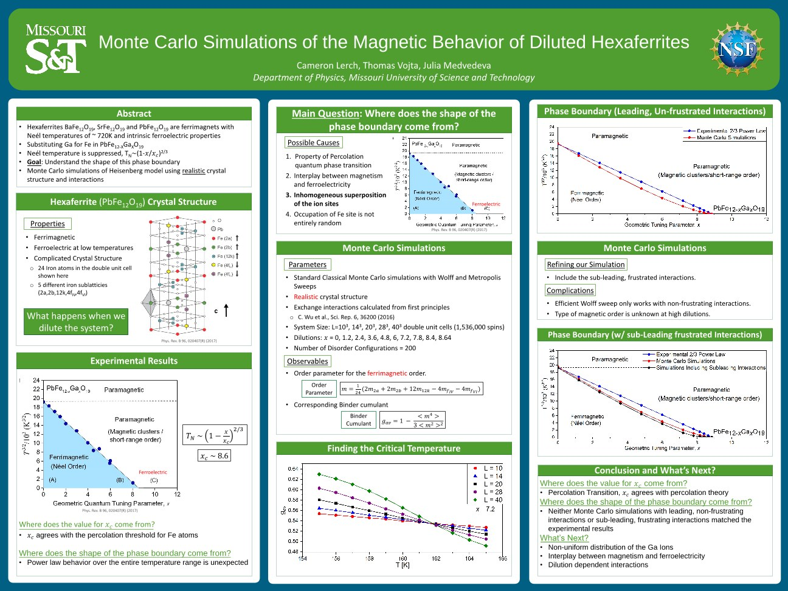
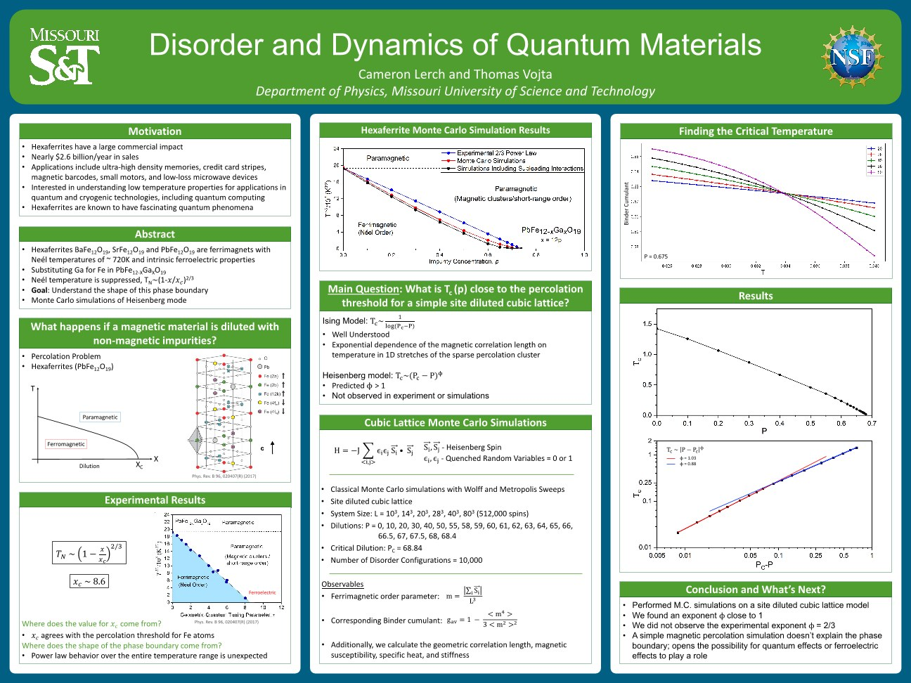
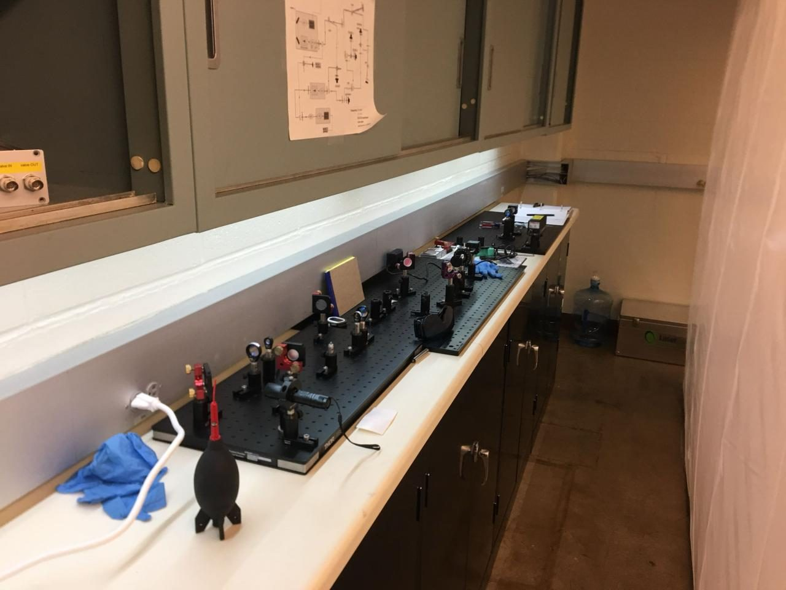
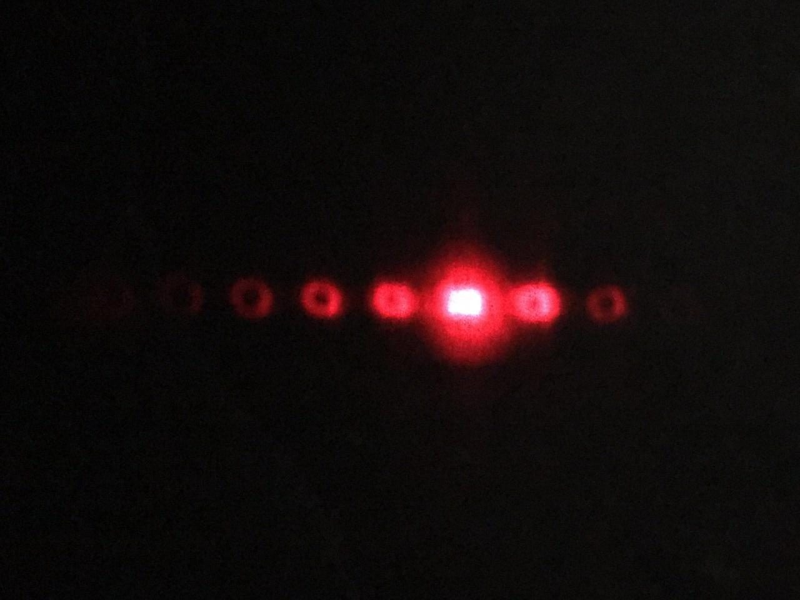
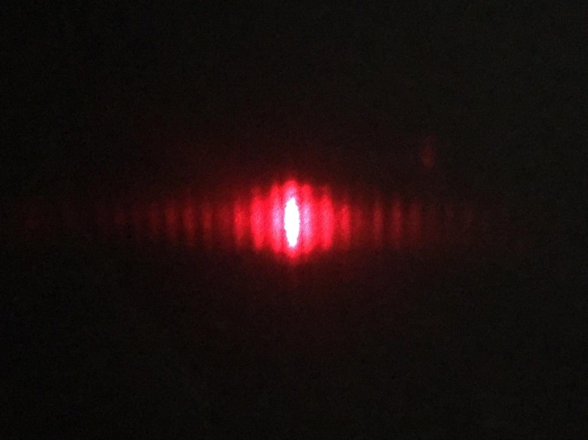

Magnetic Behavior of Diluted Hexaferrites
Hexaferrites such as BaFe12O19, SrFe12O19, and PbFe12O19 are ferrimagnets with Néel temperatures around 720 K, used in everything from magnetic stripes and barcodes to small motors and microwave devices. Substituting non-magnetic gallium for iron in PbFe12−xGaxO19 suppresses the ordering temperature, and experiments show it following a 2/3 power law, TN ∼ (1 − x/xc)2/3, over the entire temperature range, which is unexpected. Our goal was to understand where the shape of this phase boundary comes from.
What I did
- Performed realistic Monte Carlo simulations of diluted hexaferrites: a Heisenberg model on the real crystal structure, with exchange interactions calculated from first principles, using Wolff and Metropolis updates.
- Programmed parallelized code to run large-scale simulations, up to 40³ double unit cells (1,536,000 spins), averaged over many disorder configurations.
- Located the critical temperatures from Binder cumulant crossings and mapped the ferrimagnetic–paramagnetic phase boundary.
- Compared against a simple site-diluted cubic lattice model (up to 80³ = 512,000 spins).
What we found
The critical concentration xc agrees with percolation theory. But neither the leading, unfrustrated interactions nor added sub-leading, frustrated interactions reproduce the experimental 2/3 power law, and on the cubic lattice we found an exponent close to 1. A simple magnetic percolation picture doesn't explain the phase boundary, which leaves room for other effects: a non-uniform distribution of the Ga ions, interplay between magnetism and ferroelectricity, or dilution-dependent interactions.
Presentations & awards
- APS March Meeting 2018 (Los Angeles) and 2019 (Boston)
- Missouri Undergraduate Research Day at the Capitol, 2019: presented "Disorder and Dynamics of Quantum Materials" to state legislators
- Missouri S&T Fuller Poster Competition: 1st place (47th annual) and runner-up (48th annual)
Publications
- L. Sowadski, S. Anderson, C. Lerch, J. Medvedeva, T. Vojta, "Magnetic Properties of Diluted Hexaferrites," Phys. Rev. B 110, 014432 (2024)
- G. Khairnar, C. Lerch, T. Vojta, "Phase Boundary Near a Magnetic Percolation Transition," Eur. Phys. J. B 94, 43 (2021)


Diffraction Gratings and the Orbital Angular Momentum of Light
- Worked with Dr. Fischer on a variety of research in his Laboratory for Atomic, Molecular, and Optical Research.
- Gained hands-on experience with high-powered lasers and optics.
- Investigated orbital angular momentum and how this optical property could be used in other areas of Dr. Fischer's research.
- Used a laser, a light modulator, a camera, and various optics to measure how different diffraction gratings affected the output intensity and beam profile of the laser light.
- Used MATLAB to generate and fine-tune the diffraction gratings displayed on the light modulator.



Superfluid Density and Compressibility at the Superfluid–Mott Glass Transition
- Assisted Dr. Vojta with his research on quantum phase transitions, focusing on the transition from an insulator to a superfluid.
- Incorporated the stiffness parameter into several existing models of this phase transition.
- Used the Pegasus IV high-performance cluster to run large system sizes and generate data.
- Plotted and fit the data in gnuplot to extract the value of the stiffness.
Publications & presentations
- C. Lerch, T. Vojta, "Superfluid Density and Compressibility at the Superfluid–Mott Glass Transition," Eur. Phys. J. Special Topics 227, 2275 (2019)
- J. Crewse, C. Lerch, T. Vojta, "Quantum Critical Behavior of a Three-Dimensional Superfluid–Mott Glass Transition," Phys. Rev. B 98, 054514 (2018)
- APS March Meeting 2018, Los Angeles